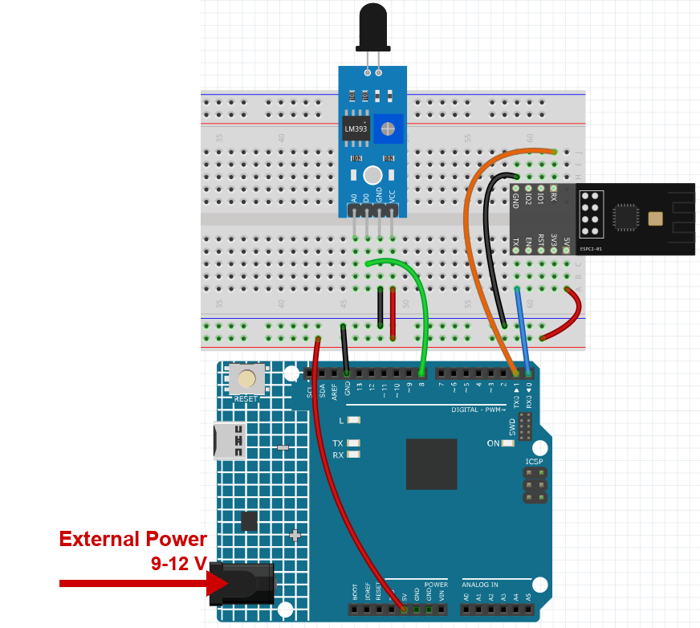
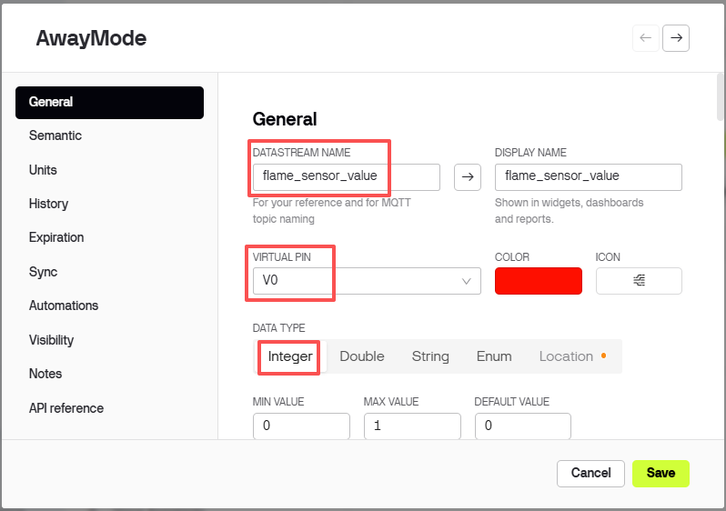
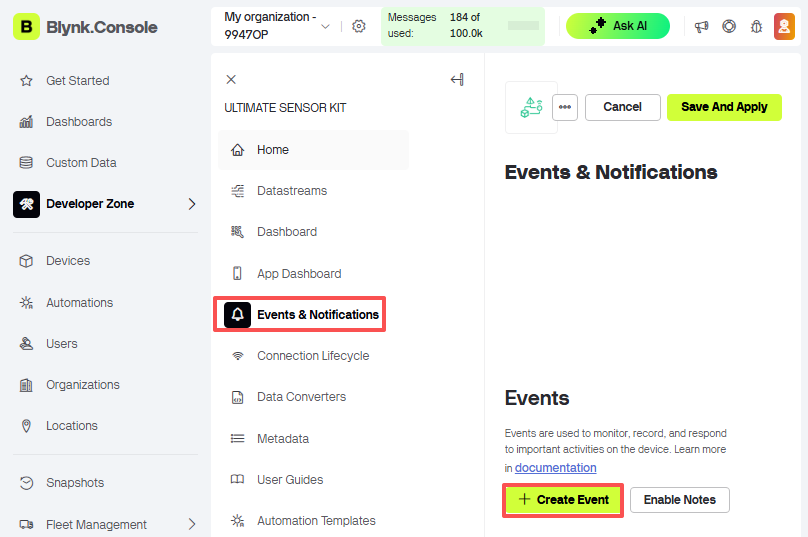
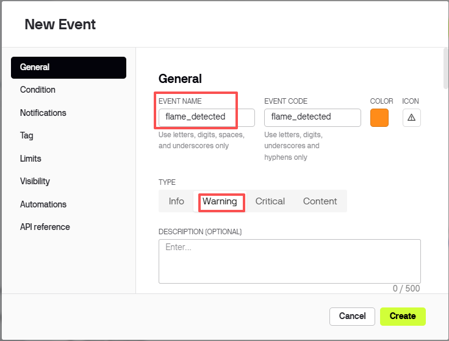
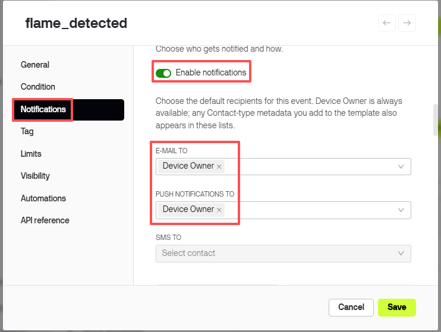
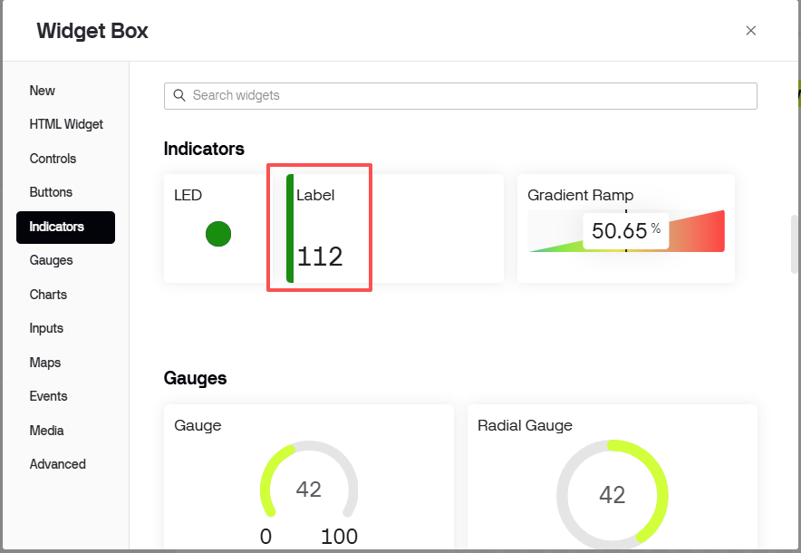
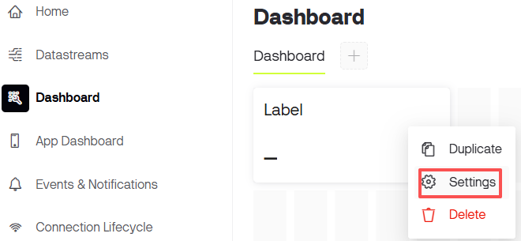
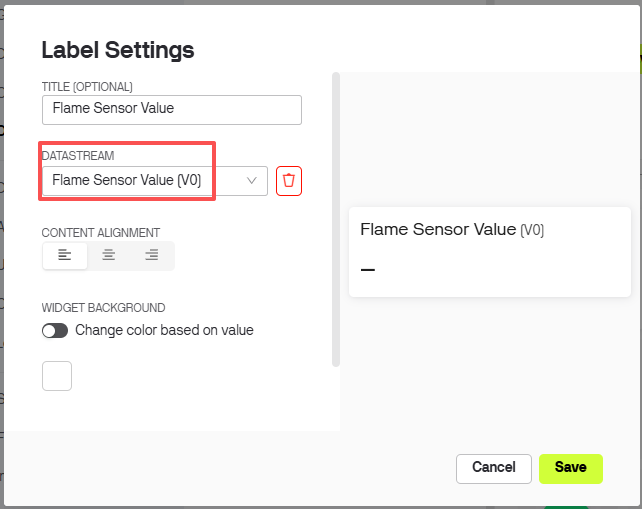
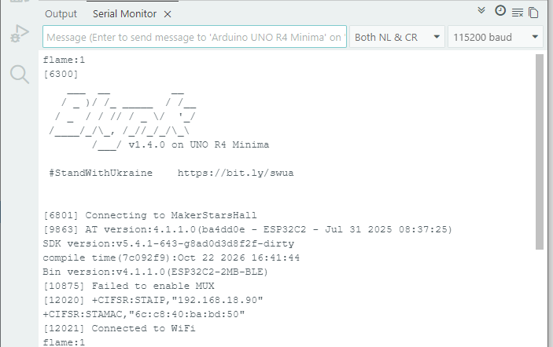
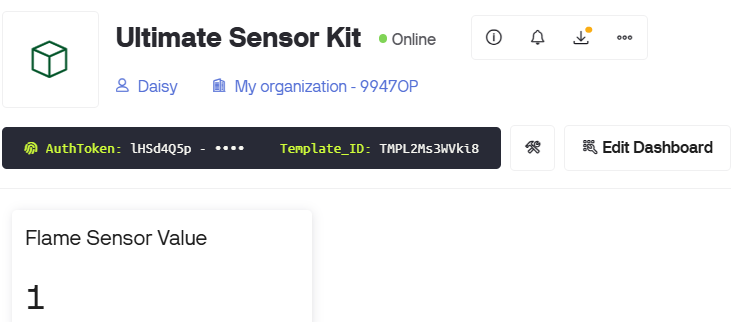

Note
Hello, welcome to the SunFounder Raspberry Pi & Arduino & ESP32 Enthusiasts Community on Facebook! Dive deeper into Raspberry Pi, Arduino, and ESP32 with fellow enthusiasts.
Why Join?
Expert Support: Solve post-sale issues and technical challenges with help from our community and team.
Learn & Share: Exchange tips and tutorials to enhance your skills.
Exclusive Previews: Get early access to new product announcements and sneak peeks.
Special Discounts: Enjoy exclusive discounts on our newest products.
Festive Promotions and Giveaways: Take part in giveaways and holiday promotions.
👉 Ready to explore and create with us? Click [here] and join today!
1. Flame Alert System with Blynk
In this chapter, we will guide you through the process of creating a home flame alarm system demo using Blynk. By utilizing a flame sensor, you can detect potential fires in your home. Sending the detected values to Blynk allows for remote monitoring of your home via the internet. In case of a fire, Blynk will promptly notify you via email.
1. Build the Circuit
Note
The module draws a high current at start-up, so make sure the 9 V battery or an external power supply is plugged into the DC jack of the R4 Minima.


2. Configure Blynk
Note
The template and the device were created in Get Started with Blynk. Adding data to the template does not change the device token, so the three lines in the sketch stay the same for every project.
Add a datastream
Open the Ultimate Sensor Kit template you created in the Get Started chapter.

Click Edit to open the template.

Click Datastreams, then Create New.

Fill in the form like this:
DATASTREAM NAME:
flame_sensor_valueDISPLAY NAME:
Flame Sensor ValueVIRTUAL PIN:
V0DATA TYPE: Integer
MIN
0, MAX1


Add an event
The event is what pops a notification up on your phone.
Switch to Events & notifications, then click Create Event.

Set EVENT CODE to
flame_detected.Note
Type it exactly like this. The sketch calls
Blynk.logEvent("flame_detected"), and any other spelling means the notification never arrives.
Turn the notification on and choose where it should go.



Add a web dashboard
Click Dashboard, then Add Widget.

Drag a Label widget onto the dashboard.

Click the three dots in the corner of the widget and choose Settings.

Set Datastream to
Flame Sensor Value (V0).
Click Save.


3. Run the Code
Open the
01-Flame_alert_system.inofile under the path ofultimate-sensor-kit\code\iot_project_espc201\wifi\01-Flame_alert_system, or copy this code into Arduino IDE.The three Blynk lines were copied in Get Started with Blynk. Every project of this kit uses the same device, so they never have to be changed - only the Wi-Fi settings below are project specific.
#define BLYNK_TEMPLATE_ID "TMPLxxxxxx" #define BLYNK_TEMPLATE_NAME "Ultimate Sensor Kit" #define BLYNK_AUTH_TOKEN "YourAuthToken"
You also need to enter the
ssidandpasswordof the WiFi you are using.char ssid[] = "your_ssid"; char pass[] = "your_password";
After selecting the correct board and port, click the Upload button. Open the Serial monitor(set baudrate to 115200) and wait for a prompt such as a successful connection to appear.

Now, Blynk will show the data read from flame sensor. In the label widget, you can see the value read by the flame sensor. When the displayed value is 1, the background of the label will be shown in green. When the value is 0, the background of the label will be shown in red and Blynk will send you an alert email.

If you want to use Blynk on mobile devices, please refer to How to use Blynk on mobile device?.


4. Code explanation
Blynk account and libraries
The first three lines tell the board which Blynk device it belongs to. They were copied in the Get Started chapter and are the same in every project of this kit.
#define BLYNK_TEMPLATE_ID "TMPL2Ms3WVki8" #define BLYNK_TEMPLATE_NAME "Ultimate Sensor Kit" #define BLYNK_AUTH_TOKEN "lHSd4Q5pXP7YKUovVfPZYZqC0UHVORY6" #define BLYNK_PRINT Serial // debug output on the Serial Monitor #include <ESP8266_Lib.h> // AT-command driver for the module #include <BlynkSimpleShieldEsp8266.h> // Blynk running on top of that driver
The serial port that talks to the module
The ESPC2-01 does not run your sketch - it works as a modem that receives AT commands. On the R4 it is wired to D0/D1, which is
Serial1, a hardware serial port, so there are no bit errors at 115200 baud.#define EspSerial Serial1 #define ESP8266_BAUD 115200 ESP8266 wifi(&EspSerial);
Wi-Fi credentials, sensor pin and timer
char ssid[] = "MakerStarsHall"; char pass[] = "sunfounder"; const int sensorPin = 8; BlynkTimer timer;
The flame module outputs a plain digital level, so pin 8 is read with
digitalRead().BlynkTimeris a software timer from the Blynk library: it runs a function on a schedule withoutdelay(), which would freeze the connection.espModuleInit() - wake the module up first
The module needs about a second to boot and prints its start-up log on the very same wire. If the sketch starts sending AT commands too early, the replies get mixed with that log and Blynk cannot read them. This function waits for the word
ready, then sendsATE0to switch the echo off.void espModuleInit() { unsigned long t0 = millis(); String buf; while (millis() - t0 < 5000) { while (EspSerial.available()) { buf += (char)EspSerial.read(); if (buf.indexOf("ready") >= 0) t0 = millis() - 5000; // leave the loop } } while (EspSerial.available()) EspSerial.read(); EspSerial.print("ATE0\r\n"); // echo off delay(300); while (EspSerial.available()) EspSerial.read(); }
ATE0is not optional: with echo on, every reply starts with the command you just sent, so the Blynk parser sees a line of garbage before the real answer.setup()
void setup() { pinMode(sensorPin, INPUT); Serial.begin(115200); // Serial Monitor EspSerial.begin(ESP8266_BAUD); // module delay(1000); timer.setInterval(1000L, myTimerEvent); // once per second espModuleInit(); Blynk.config(wifi, BLYNK_AUTH_TOKEN); Blynk.connectWiFi(ssid, pass); }
timer.setInterval(1000L, myTimerEvent)calls the function every 1000 ms. Change that number to report faster or slower.Blynk.config()stores the token,Blynk.connectWiFi()then brings the module online. You could use one line,Blynk.begin(...), but doing it in two steps lets the module finish booting first.
loop()
void loop() { Blynk.run(); timer.run(); }
Blynk.run()keeps the connection alive andtimer.run()fires the scheduled function. Nothing in the loop may block, or the platform drops the device.sendData() - read the pin and report it
void sendData() { int data = digitalRead(sensorPin); Blynk.virtualWrite(V0, data); Serial.print("flame:"); Serial.println(data); if (data == 0) { Blynk.logEvent("flame_detected"); } }
Blynk.virtualWrite(V0, data)pushes the value to datastream V0, which is what the label on the dashboard shows.The flame module is active low: it reads
0when a flame is close and1when the air is clear. That is why the sketch checksdata == 0.Blynk.logEvent("flame_detected")sends the event that pops the notification up. The string must match the EVENT CODE you created earlier, character for character.